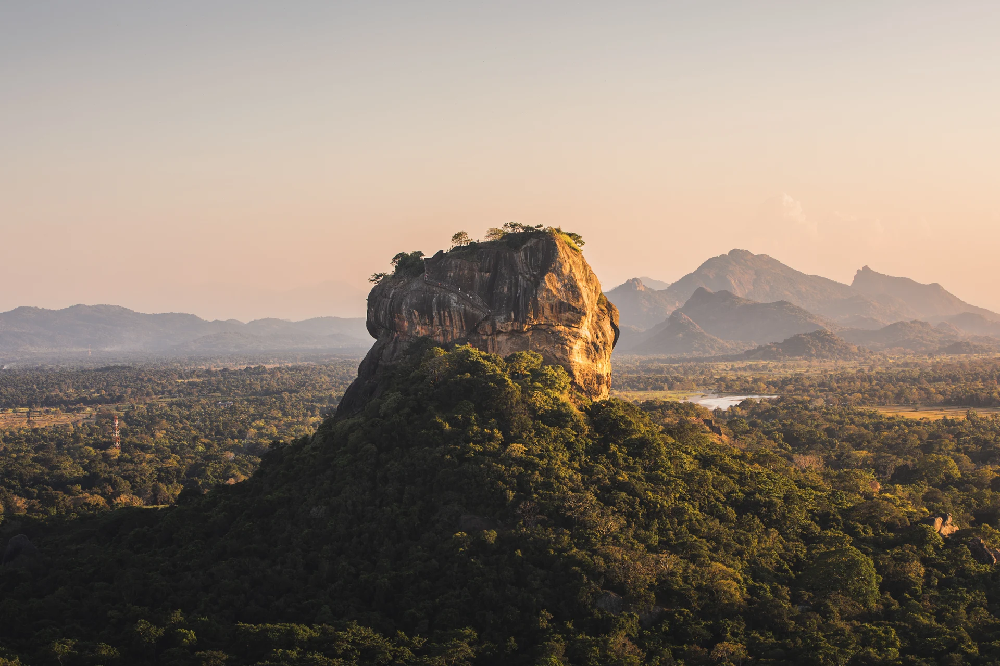
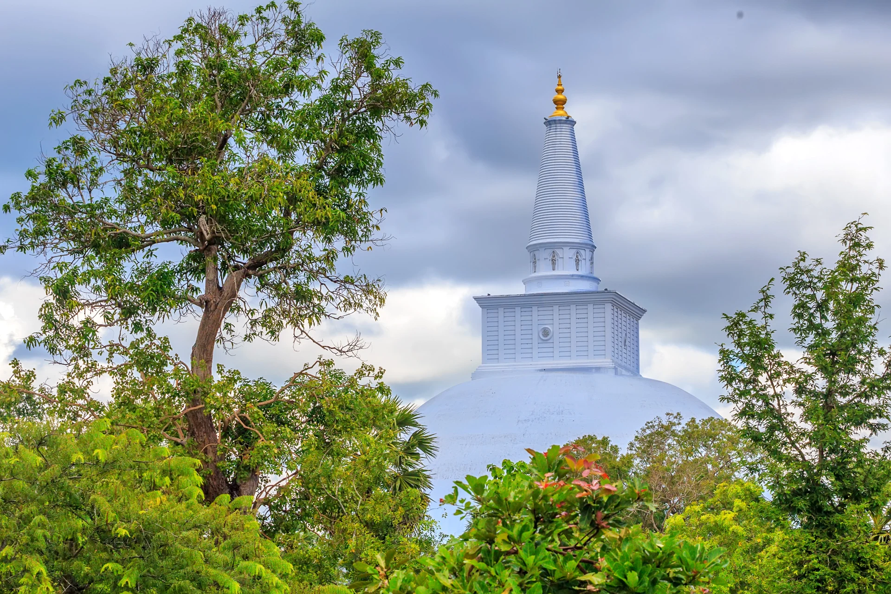
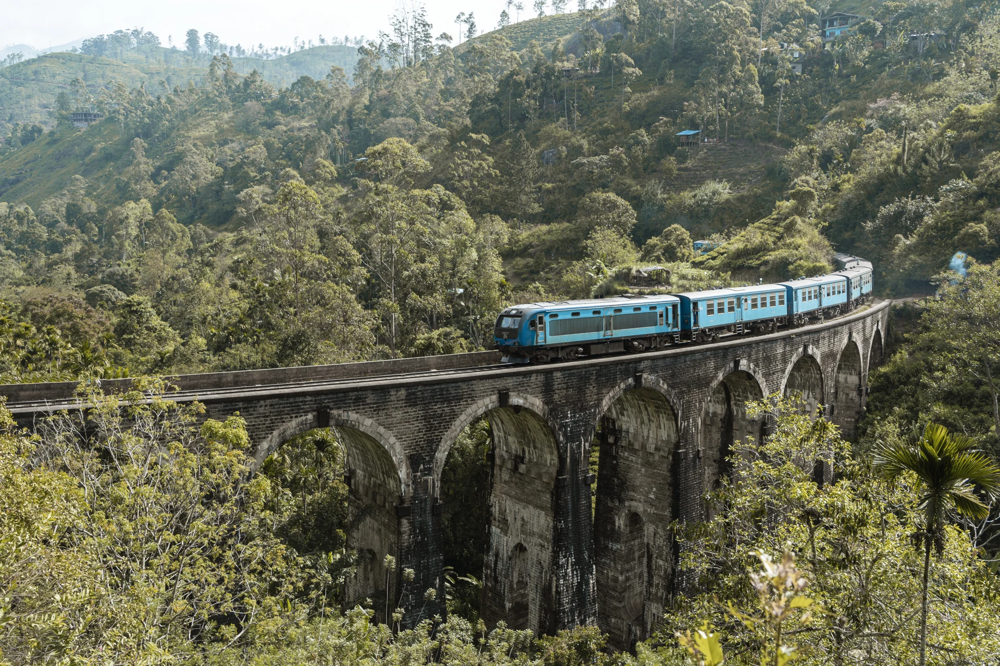
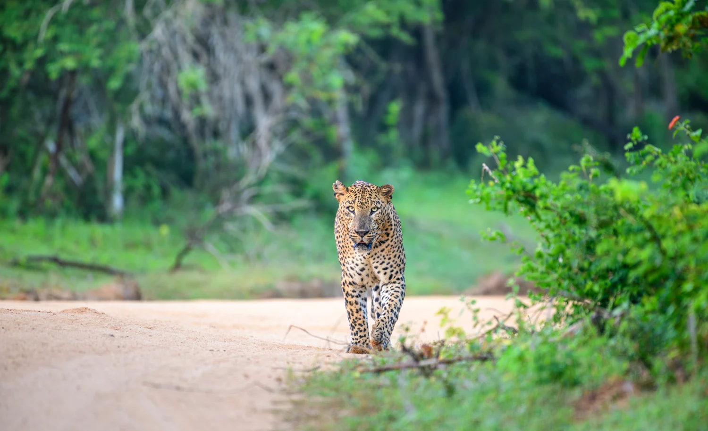
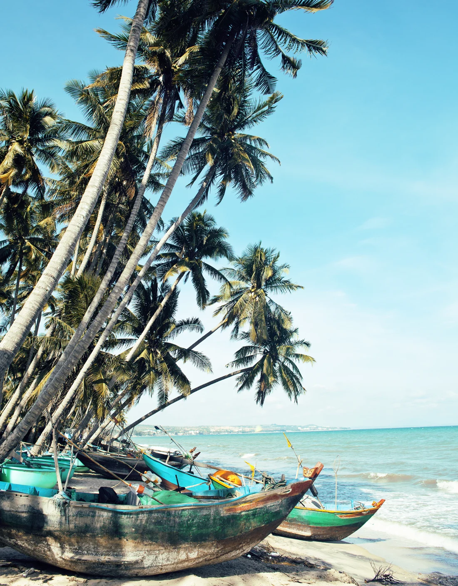

FIVE WAYS TO FALL FOR THE ISLAND
Sri Lanka,
one journey at a time.
Choose the feeling. Discover the details.
Make the journey your own.

10 DAYSTHE CLASSIC ISLAND JOURNEY
Island Overture
Ancient landmarks, tea country, wildlife and a final pause beside the sea.
Sigiriya · Kandy · Ella · Yala · GalleView full itinerary ↗
7 DAYSTHE HERITAGE JOURNEY
Kingdoms & Quiet Temples
A thoughtful passage through ancient cities, stone temples and living traditions.
Negombo · Anuradhapura · Sigiriya · Polonnaruwa · Dambulla · KandyView full itinerary ↗
7 DAYSTHE HILL-COUNTRY JOURNEY
Tea Trails & Waterfalls
Cool mountain air, green tea slopes, railway scenes and cascading waterfalls.
Kandy · Nuwara Eliya · Ella · Haputale · BelihuloyaView full itinerary ↗
8 DAYSTHE NATURE & WILDLIFE JOURNEY
Wild Hearts of Ceylon
Rainforest trails, elephant country, wetlands and the wild southeast.
Negombo · Sinharaja · Udawalawe · Tissamaharama · Yala · TangalleView full itinerary ↗
7 DAYSTHE SOUTH COAST ESCAPE
Saltwater & Slow Days
Fort-town charm, gentle surfing towns and room to simply enjoy the ocean.
Galle · Unawatuna · Weligama · Mirissa · TangalleView full itinerary ↗These are suggested, flexible journeys. Dates, stays, transport, activities and pricing are confirmed during personalised planning.
Build your own journey ↗